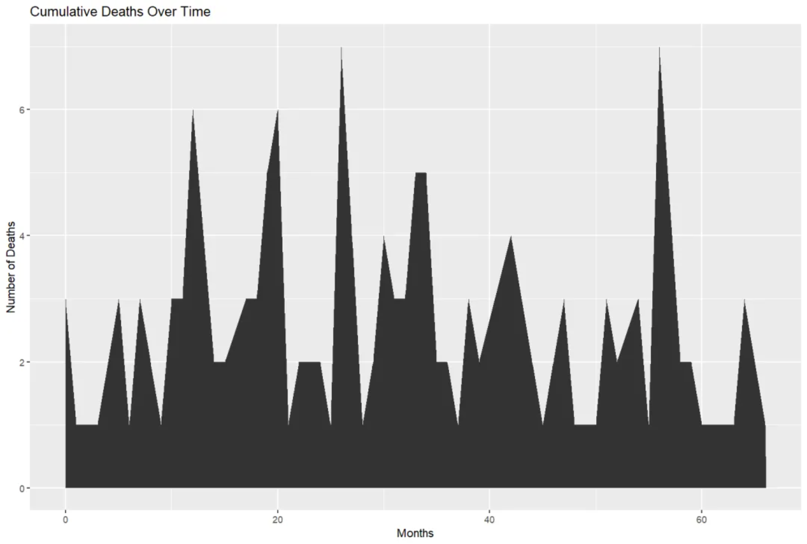
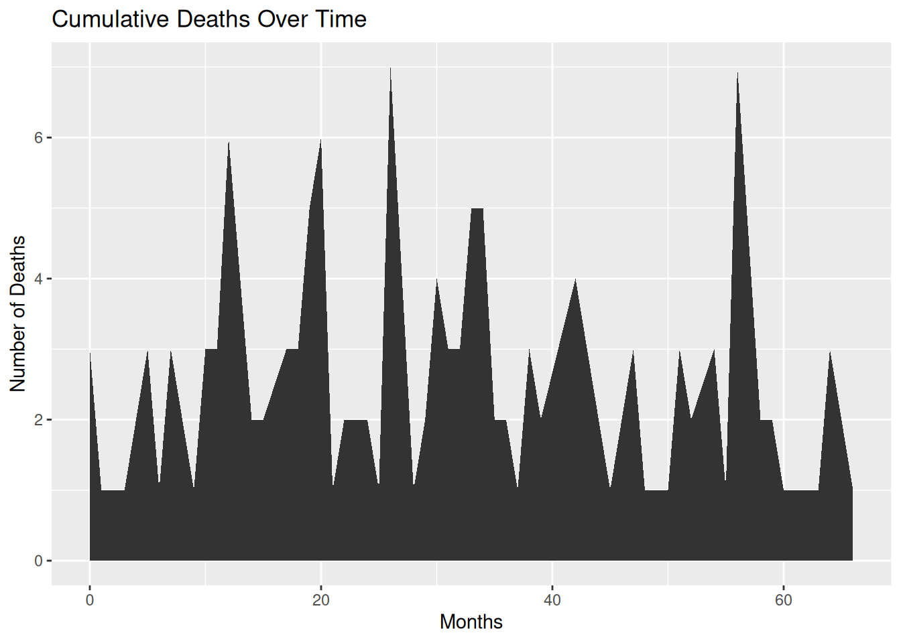
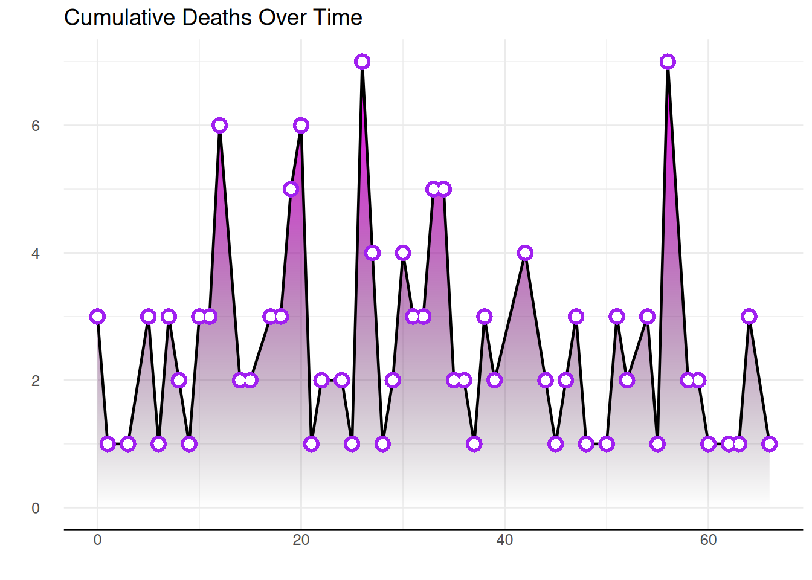
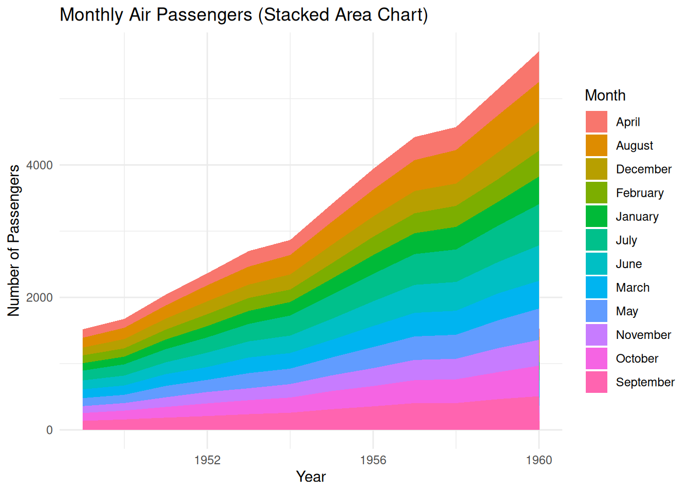
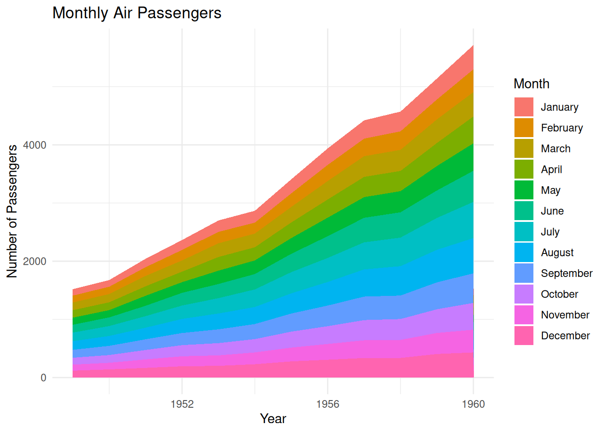
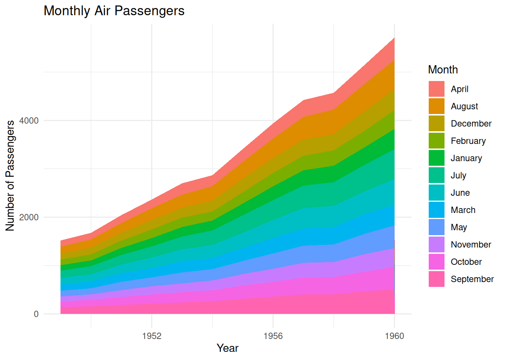
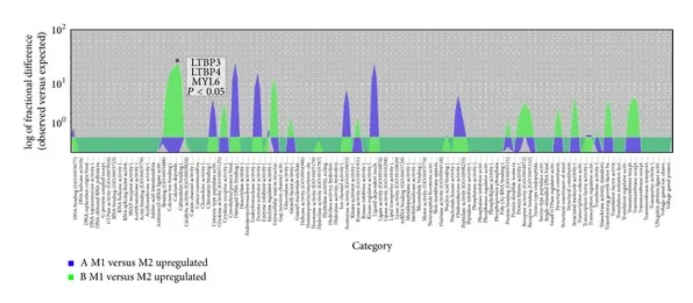
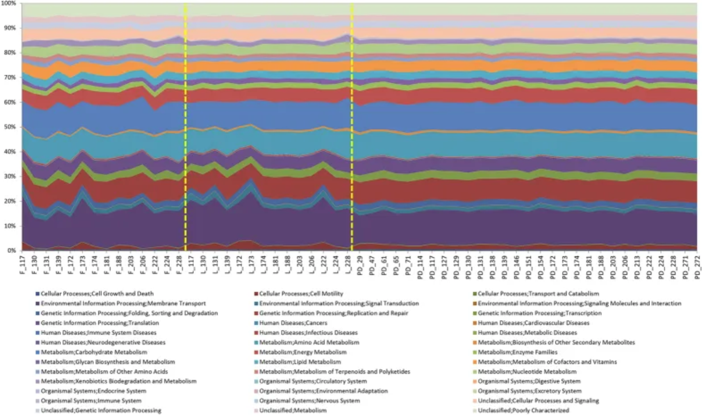
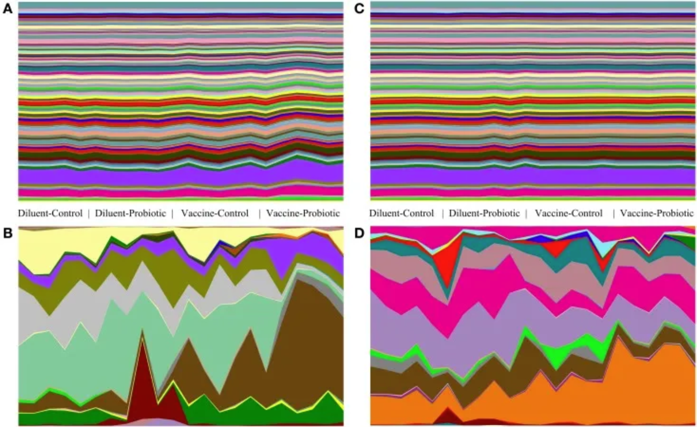

# Install packages
if (!requireNamespace("tidyverse", quietly = TRUE)) {
install.packages("tidyverse")
}
if (!requireNamespace("viridis", quietly = TRUE)) {
install.packages("viridis")
}
if (!requireNamespace("dygraphs", quietly = TRUE)) {
install.packages("dygraphs")
}
if (!requireNamespace("xts", quietly = TRUE)) {
install.packages("xts")
}
if (!requireNamespace("hrbrthemes", quietly = TRUE)) {
install.packages("hrbrthemes")
}
if (!requireNamespace("ggpattern", quietly = TRUE)) {
install.packages("ggpattern")
}
# Load packages
library(tidyverse)
library(viridis)
library(dygraphs)
library(xts)
library(hrbrthemes)
library(ggpattern)Area Chart
An area chart is a line chart in which the area below the line is filled with color. It is mainly used to display values at continuous intervals or over a time span.
Example

This area plot shows the cumulative number of deaths per month in the TCGA-BRCA.survival.tsv dataset. The number of deaths per month is represented by stacked areas, with the size of the area proportional to the number of deaths in that month. The x-axis shows time, calculated in months, starting from the time the event occurred. The y-axis shows the number of deaths that occurred in the corresponding month. The area of each region represents the number of deaths in that month; the larger the region, the more deaths. The area plot provides a visual representation of the trend in the number of deaths over time. It can observe sharp increases in the number of deaths in certain months, or periods of low or stable deaths, which is helpful in analyzing mortality risk and other related factors within specific time periods.
Setup
System Requirements: Cross-platform (Linux/MacOS/Windows)
Programming Language: R
Dependencies:
tidyverse;viridis;dygraphs;xts;hrbrthemes;ggpattern
Data Preparation
We used the built-in R dataset AirPassengers and TCGA-BRCA.survival.tsv from the UCSC Xena website (UCSC Xena (xenabrowser.net)).
# TCGA-BRCA.survival.tsv
tcga_brca_survival <- readr::read_tsv("https://bizard-1301043367.cos.ap-guangzhou.myqcloud.com/TCGA-BRCA.survival.tsv")
tcga_brca_filtered <- tcga_brca_survival %>%
filter(OS.time <= 2000) %>%
mutate(month = floor(OS.time / 30))
monthly_death_counts <- tcga_brca_filtered %>%
filter(OS == 1) %>%
group_by(month) %>%
summarise(deaths = n())
# AirPassengers
data("AirPassengers")
air_passenger_data <- as.data.frame(AirPassengers)
air_passenger_data$Month <- rep(month.name, 12)
air_passenger_data$Year <- rep(1949:1960, each=12)
air_passenger_data$x <- as.numeric(air_passenger_data$x)
air_passenger_long <- air_passenger_data %>%
gather(key = "Variable", value = "Value", -Year, -Month)
air_passenger_percentage <- air_passenger_long %>%
group_by(Year) %>%
mutate(Percentage = Value / sum(Value) * 100) # Calculate the percentage for each month
air_passenger_time_series <- data.frame(datetime = time(AirPassengers), count = as.vector(AirPassengers))
air_passenger_time_series$datetime <- as.Date(air_passenger_time_series$datetime)
air_passenger_xts <- xts(x = air_passenger_time_series$count, order.by = air_passenger_time_series$datetime) # Creating an XTS objectVisualization
1. Basic Plotting
1.1 Basic area plot
Use the ggplot2 package to plot area graphs.
# Basic area plot
p <- ggplot(monthly_death_counts, aes(x = month, y = deaths)) +
geom_area() +
labs(title = "Cumulative Deaths Over Time",
x = "Months",
y = "Number of Deaths")
p
This area plot shows the cumulative number of deaths in each month within the TCGA-BRCA.survival.tsv dataset.
1.2 Custom area plot
Several options are available for customizing the appearance of the area map:
- Add a title using
ggtitle(). - Change the line style using parameters such as
shape,size, andcolor. - Add opacity to the filled area using
opacity. - Customize a general theme using the
theme_ipsum()function in thehrbrthemespackage. - Highlight the top line using
geom_line(). - Display a single data point using
geom_point()if there aren’t many observations.
# Custom area plot
p <- ggplot(monthly_death_counts, aes(x = month, y = deaths)) +
geom_area(fill="#69b3a2", alpha=0.4) +
geom_line(color="#69b3a2", size=1.2) +
geom_point(size=3, color="#69b3a2") +
theme_ipsum() +
labs(title = "Cumulative Deaths Over Time",
x = "Months",
y = "Number of Deaths")
p
This area chart displays the cumulative number of deaths for each month in the TCGA-BRCA.survival.tsv dataset. Customizing the appearance of the area chart can make it better suited to the data presentation needs, while also enhancing readability and visual appeal.
1.3 Add gradient colors
To add a color gradient instead of light blue, we need to use the ggpattern package and define the colors the graphic will use. The bottom color is white, and the top color is red.
# Add gradient colors
p <- ggplot(monthly_death_counts, aes(x = month, y = deaths)) +
geom_area() +
labs(title = "Cumulative Deaths Over Time",
x = "Months",
y = "Number of Deaths") +
geom_area_pattern(data = monthly_death_counts,
pattern = "gradient",
pattern_fill = "white",
pattern_fill2 = "red")
p
1.4 Gradient colors with transparency
To add transparency to a graphic, simply use a naturally transparent color. For example, here we’ll change white to a transparent gray. The bottom color is transparent light gray, and the top color is blue.
# Gradient colors with transparency
p <- ggplot(monthly_death_counts, aes(x = month, y = deaths)) +
geom_area_pattern(data = monthly_death_counts,
pattern = "gradient",
fill = "#00000010",
pattern_fill = "#00000010",
pattern_fill2 = "blue")
p
1.5 Fully customized area map with gradient
By using the content seen above and adding other features (such as changing the theme, deleting axes, etc.), you will get even more beautiful graphics.
The code example below adds a black line to the top of an area chart, uses the hrbrthemes package to change the theme and remove the axis.
# Fully customized area map with gradient
p <- ggplot(monthly_death_counts, aes(x = month, y = deaths)) +
geom_area_pattern(data = monthly_death_counts,
pattern = "gradient",
fill = "#00000000",
pattern_fill = "#00000000",
pattern_fill2 = "magenta") +
geom_line(data = monthly_death_counts, colour = "black", linewidth = 0.8) +
geom_point(shape = 16, size = 4.5, colour = "purple") +
geom_point(shape = 16, size = 2.5, colour = "white") +
ggtitle("Cumulative Deaths Over Time") +
theme_bw() +
theme(plot.title = element_text(size = 14),
panel.border = element_blank(),
axis.line.x = element_line(),
text = element_text(size = 12),
axis.ticks = element_blank(),
axis.text.y = element_text(margin = margin(0,15,0,0, unit = "pt"))) +
scale_alpha_identity() + labs(x="",y="")
p
1.6 Drawing area plots using basic R
Use the basic R function polygon() to build an area map without using any other packages.
plot(monthly_death_counts$month, monthly_death_counts$deaths, col=rgb(0.2,0.1,0.5,0.9), type="o", lwd=3,
xlab="Months", ylab="Number of Deaths", pch=20, main="Cumulative Deaths Over Time")
polygon(
x = c(min(monthly_death_counts$month), monthly_death_counts$month,
max(monthly_death_counts$month)), # Close x-boundary
y = c(0, monthly_death_counts$deaths, 0), # Close y-boundary
col = rgb(0.2, 0.1, 0.5, 0.2),
border = FALSE) # Use polygon() to fill the area.
This area plot shows the cumulative number of deaths for each month in the TCGA-BRCA.survival.tsv dataset. Built using the basic R polygon() function without any additional packages, it visually illustrates the change in the number of deaths over time. The area in the plot represents the cumulative number of deaths for each month; the area gradually increases over time, reflecting the cumulative trend of deaths.
2. Stacked area diagram
2.1 Basic stacked area diagram
A stacked area chart is a special type of area chart used to compare multiple variables within a given range. Each data series in a stacked area chart is drawn based on the previous data series; that is, each measurement fills the area between rows. By stacking different variables in a specific order, the area occupied by each variable becomes clearer, allowing for a more intuitive comparison of the size relationships and trends between variables.
Stacked area plots can be created using the ggplot2 package.
p <- ggplot(air_passenger_long, aes(x = Year, y = Value, fill = Month)) +
geom_area() +
labs(title = "Monthly Air Passengers (Stacked Area Chart)",
x = "Year", y = "Number of Passengers") +
theme_minimal()
p
2.2 Controlling the stacking order in ggplot2
- Use the
factor()function to set a specific order for variables. - Use
sort()to sort alphabetically. - Sort based on specific data values.
# Sort by month
air_passenger_data$Month <- factor(air_passenger_data$Month, levels = month.name) # Convert the Month column into ordered factors.
air_passenger_long <- air_passenger_data %>%
gather(key = "Variable", value = "Value", -Year, -Month)
p <- ggplot(air_passenger_long, aes(x = Year, y = Value, fill = Month)) +
geom_area() +
labs(title = "Monthly Air Passengers",
x = "Year", y = "Number of Passengers") +
theme_minimal()
p
This stacked area chart shows the monthly air passenger numbers from 1949 to 1960, with each month’s passenger numbers represented by stacked areas of different colors. The stacked areas are arranged in chronological order by month (January to December). This stacking method clearly shows the changes in passenger numbers each month and the trend comparison between different years, while also allowing observation of seasonal fluctuations in passenger numbers each year. The area chart uses color stacking to show the contribution of different months to the overall passenger numbers, facilitating intuitive analysis of passenger volume for different months in different years.
# Sort alphabetically
myLevels <- levels(factor(air_passenger_long$Month))
air_passenger_long$Month <- factor(air_passenger_long$Month, levels = sort(myLevels))
p <- ggplot(air_passenger_long, aes(x = Year, y = Value, fill = Month)) +
geom_area() +
labs(title = "Monthly Air Passengers",
x = "Year", y = "Number of Passengers") +
theme_minimal()
p
This stacked area chart shows the number of air passengers each month from 1949 to 1960, with each month’s passenger numbers represented by stacked areas of different colors. Unlike previous charts, the months are arranged alphabetically, rather than in the natural month order (January to December). This method helps to see the contribution of each alphabetically ordered month to the total number of passengers in each year. While this arrangement allows analysts to observe the percentage of each month in the total number of passengers, it loses the original seasonal trend of the time series.
# Sort by value for a specific year (e.g., 1949)
myLevels_value <- air_passenger_long %>%
filter(Year == 1949) %>%
arrange(Value)
air_passenger_long$Month <- factor(air_passenger_long$Month, levels = myLevels_value$Month)
p <- ggplot(air_passenger_long, aes(x = Year, y = Value, fill = Month)) +
geom_area() +
labs(title = "Monthly Air Passengers (Sorted by 1949 Values)",
x = "Year", y = "Number of Passengers") +
theme_minimal()
p
This stacked area chart shows the number of air passengers each month from 1949 to 1960, with the number of passengers for each month represented by stacked areas of different colors. The months are not ordered by the calendar months (January to December), but rather by the number of passengers in each month of 1949, from lowest to highest. This allows for a visual observation of the relative proportions of passengers in each month of 1949 and shows how these numbers changed over different years.
2.3 Custom styles
The overall appearance of a chart can be improved in the following ways:
- Use
viridiscolor scale -
hrbrthemespackage’stheme_ipsum - Add title using
ggtitle
p <- ggplot(air_passenger_long, aes(x = Year, y = Value, fill = Month)) +
geom_area(alpha=0.6 , size=.5, colour="white") +
scale_fill_viridis(discrete = T) +
theme_ipsum() +
ggtitle("Monthly Air Passengers")
p
This stacked area chart displays monthly air passenger numbers from 1949 to 1960, with each month’s passenger numbers represented by stacked areas of different colors. Customizing the appearance of the area chart allows for better presentation of the data, while also enhancing readability and visual appeal.
3. proportional stacked area diagram
In a scaled stacked area chart, the sum for each year is always equal to 100, and the value for each group is expressed as a percentage. To draw a scaled stacked area chart, you first need to calculate the percentages, which can be done using the dplyr package.
p <- ggplot(air_passenger_percentage, aes(x = Year, y = Percentage, fill = Month)) +
geom_area(alpha = 0.6, size = 1, colour = "black") +
labs(title = "Monthly Air Passengers",
x = "Year", y = "Percentage of Passengers") +
theme_minimal()
p
This scaled-up area plot shows the percentage change in monthly air passenger numbers across different years in the AirPassengers dataset. Each layer in the plot (filled with a different color for each month) represents the proportion of passengers for that month within the year, stacked together to form the area plot. This scaled-up area plot provides a visual representation of how monthly air passenger numbers change over time, clearly identifying the relative proportion of each month in the total annual passenger count, and allowing observation of trends across different years.
4. Interactive area plot
Use the dygraph package for time series visualization. It provides features such as zooming, hovering, and minimaps.
p <- dygraph(air_passenger_xts) %>%
dyOptions(labelsUTC = TRUE, fillGraph = TRUE, fillAlpha = 0.1, drawGrid = FALSE, colors = "#D8AE5A") %>%
dyRangeSelector() %>%
dyCrosshair(direction = "vertical") %>%
dyHighlight(highlightCircleSize = 5, highlightSeriesBackgroundAlpha = 0.2, hideOnMouseOut = FALSE) %>%
dyRoller(rollPeriod = 1)
pInteractive area plot
This graph, created using dygraph, is a dynamic time-series plot showing the monthly trends in air passenger numbers across the AirPassengers dataset. Each point in the graph represents the number of passengers in a given month, and various interactive features (dynamic interactions, highlighting, vertical cross lines, and filled graphs) are used to enhance readability and interactivity.
Applications
1. Basic area diagram

Overrepresentation test to distinguish upregulated genes in the muscle transcriptome in JIS and AIS-GO molecular functions. Overlapping area plots of difference show the results of the overrepresentation test of GO molecular functions to distinguish upregulated genes in the paravertebral muscle transcriptome in the JIS and AIS groups. ∗ Statistical significance above the peak marker of the overrepresentation test, calculated using Bonferroni multiple correction, P < 0.05. [1]
2. Stacked area diagram

An area plot showing the PICRUSt analysis of the sequence data. [2]

Taxonomic and genomic abundance trends on days 14 and 28. The relative abundance of taxa and the predicted abundance of functional gene groups demonstrate the stability of gene group abundance relative to taxonomic changes. Relative abundance tables of taxa and genomes were assembled and used to generate area maps for all samples on days 14 and 28. The relative abundance of each identified taxa or functional genome for each sample is shown; (A) predicted genomes on day 14, (B) taxa on day 14, (C) predicted genomes on day 28, (D) taxa on day 28. On day 14, there are significant taxonomic differences between treatments (A), and a few genomes show small changes in abundance (B). On day 28, taxonomic changes (D) are accompanied by a small number of visible changes in genomic abundance (C). [3]
Reference
[1] Nowak R, Kwiecien M, Tkacz M, Mazurek U. Transforming growth factor-beta (TGF- β) signaling in paravertebral muscles in juvenile and adolescent idiopathic scoliosis. Biomed Res Int. 2014;2014:594287. doi: 10.1155/2014/594287. Epub 2014 Sep 15. PMID: 25313366; PMCID: PMC4181945.
[2] Stewart CJ, Skeath T, Nelson A, Fernstad SJ, Marrs EC, Perry JD, Cummings SP, Berrington JE, Embleton ND. Preterm gut microbiota and metabolome following discharge from intensive care. Sci Rep. 2015 Nov 24;5:17141. doi: 10.1038/srep17141. PMID: 26598071; PMCID: PMC4657104.
[3] Ballou AL, Ali RA, Mendoza MA, Ellis JC, Hassan HM, Croom WJ, Koci MD. Development of the Chick Microbiome: How Early Exposure Influences Future Microbial Diversity. Front Vet Sci. 2016 Jan 20;3:2. doi: 10.3389/fvets.2016.00002. PMID: 26835461; PMCID: PMC4718982.
[4] Csardi, G., & Nepusz, T. (2006). igraph: Network analysis and visualization. https://cran.r-project.org/package=igraph
[5] Wickham, H. (2016). ggraph: An implementation of grammar of graphics for graphs and networks. https://cran.r-project.org/package=ggraph
[6] Wickham, H., & François, R. (2021). tidyverse: The grammar of data manipulation. https://cran.r-project.org/package=tidyverse
[7] Geyer, F., & Kolesnyk, I. (2020). CollapsibleTree: Interactive tree diagrams. https://cran.r-project.org/package=CollapsibleTree
[8] Galili, T. (2015). dendextend: An R package for visualizing, adjusting, and comparing trees. https://cran.r-project.org/package=dendextend
[9] Garnier, S. (2018). viridis: Default Color Maps from ‘matplotlib’. https://cran.r-project.org/package=viridis
[10] Aubry, R., & Bouchard, C. (2020). dygraphs: Interactive time series plotting. https://cran.r-project.org/package=dygraphs
[11] Hornik, K. (2021). xts: Extensible time series. https://cran.r-project.org/package=xts
[12] Grolemund, G., & Wickham, H. (2011). lubridate: Make dates and times easier to work with. https://cran.r-project.org/package=lubridate
[13] Wickham, H. (2016). ggplot2: Elegant graphics for data analysis. Springer. https://ggplot2.tidyverse.org
[14] Wickham, H., & François, R. (2021). dplyr: A Grammar of Data Manipulation. https://cran.r-project.org/package=dplyr
[15] Wickham, H., & Henry, L. (2021). tidyr: Tidy Messy Data. https://cran.r-project.org/package=tidyr